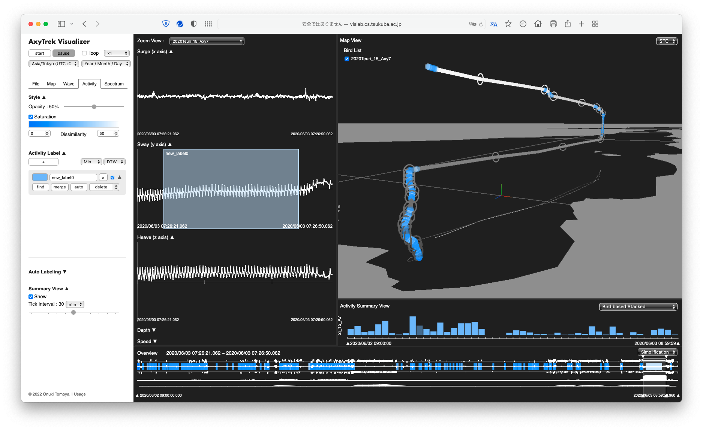

Axy Visualizer
2023.03 / Visualization

修士研究で開発した海鳥の行動分析作業の支援を目的とした可視化ツール。
このツールに関する研究論文は情報理工学位プログラムリーダー表彰(筑波大学)を受賞しました。
課題
- データが大規模であるため視覚表現な煩雑さやインタラクションの遅延が発生する。
- 複数の作業工程を全て支援できる既存のツールが少ない。
アプローチ
大規模なデータの視覚的探索の支援のために、データの概要と詳細をスムーズに探索できるビューや自動的な行動分類機能、海鳥の行動を時空間的かつ視覚的に分析するための視覚表現を設計し、統合的なツールとした開発する。
Development
TypeScript, Three.js, jQuery, chroma.js, Day.js